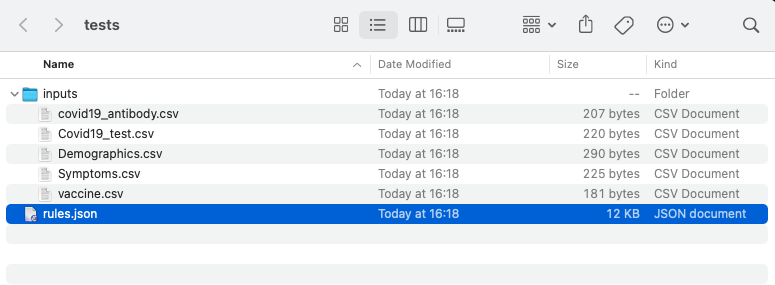

Transform GUI
Caution
On macOS the GUI only works with python >= 3.9.0
A simple Graphical User Interface (GUI) is implemented in carrot-cdm in order to run the mapping.
1. Prepare the inputs¶
In this example, we use the test data that is available in the tool (see carrot info)
We have:
- A
rules.jsonfile for the mapping-rules - A folder containing the input data

2. Start the GUI¶
Assuming you have successfully installed the packaged, you need to enter the command line to start the GUI:
etl-gui
carrot map gui
Note
This can be started from any directory, as soon as you open up the command line. You do not need to be in the same directory as all your files.
Which pops open the GUI..
3. Select Files¶
Use the browse buttons to select the rules.json file as well as the input .csv files
4. Run¶
Click the "Run" button to execute running the tools on the selected files.
5. Inspect the output¶
You will see outputs appear on the command line. A pop-up box will appear saying 'Done' when the tool has finished running.
Now the folder will contain the output tsv files which contain the mapped CDM tables. In this example these are:
person.tsvcondition_occurrence.tsvobservation.tsv